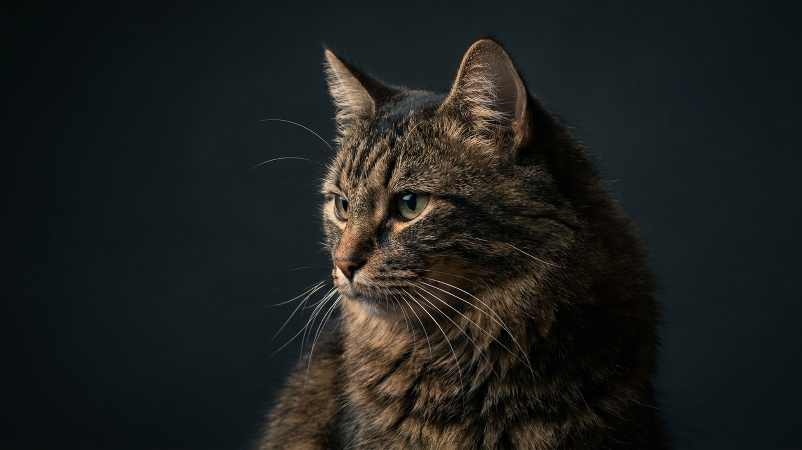

Уши метут пол, взгляд печальный, походка вразвалку — бассет-хаунд выглядит как воплощение лени. Но за этой внешностью прячется рабочая гончая, чей нос уступает по чутью только ищейке, и упрямство ей под стать. Ниже — как ухаживать за ушами и складками, беречь длинную спину и воспитывать собаку, которая слушает нос, а не вас.
🐾 Экономьте на лишних визитах к врачу
Сначала спросите AI-ветеринара в AnimaLife — часто этого достаточно, чтобы понять, нужен ли визит к врачу.
Бассет-хаунд выведен во Франции для охоты по следу: он часами шёл за запахом, не отвлекаясь ни на что. Этот инстинкт никуда не делся. Учуяв интересный след, бассет буквально глохнет — команды в этот момент для него не существует.
Длинные висячие уши — визитная карточка и слабое место. Они почти не проветриваются, внутри копятся тепло и влага, а это благодатная среда для раздражения. Осматривайте и протирайте уши минимум раз в неделю, следите за запахом и покраснением.
То же с кожными складками на морде и лапах: их держат сухими и чистыми. Появились неприятный запах, расчёсы или собака трясёт головой — это повод показать питомца ветеринару, а не подбирать средство наугад.
У бассета длинное тело на коротких лапах — сложение, при котором позвоночник и суставы под постоянной нагрузкой. Здесь работают те же правила, что для таксы: минимум прыжков и лестниц, особенно у щенка и во время роста.
Бассет обожает еду и очень склонен к полноте, а талию под массивным телом и кожей легко проглядеть. Кормите по норме, отмеряя порцию, а не «на глаз», лакомства держите в пределах 10% рациона. Регулярно проверяйте вес и упитанность — так вы бережёте и спину, и суставы.
🐾 Всё о вашем питомце — в одном приложении
AI-ветеринар, дневник, напоминания о прививках и уходе. Установите AnimaLife — это бесплатно, в Telegram и MAX.
🐾 Понравился разбор?
Подпишитесь на канал — каждый день разбираем по одному тревожному симптому у кошек и собак: что в пределах нормы, а когда пора к врачу. Подпишитесь, чтобы не пропустить разбор, который может спасти здоровье вашего питомца.
Бассет-хаунд — для терпеливого хозяина с чувством юмора, готового к упрямству, слюням и звучному голосу. Ему нужны неспешные, но регулярные прогулки с возможностью понюхать мир. Взамен вы получаете добродушного, привязчивого и на удивление ласкового компаньона.
Материал носит информационный характер и не заменяет очную консультацию ветеринара.